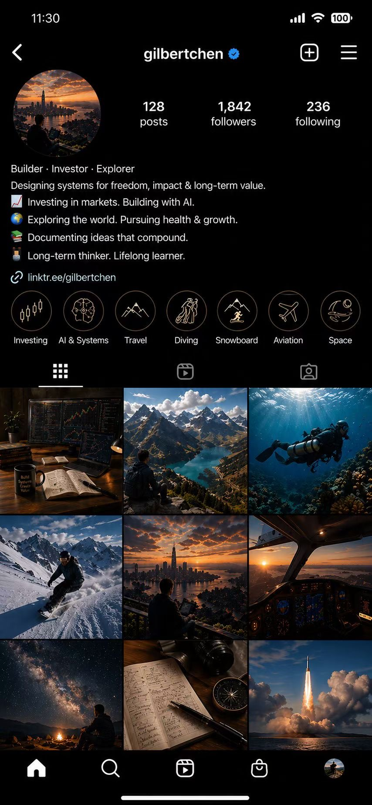

OS
orchestration
osstack
Multi-agent software development orchestration: routing, tracking, review gates, and delivery rhythm for complex builds.
I build the operating layer between human intent and AI execution.
我把 AI agent、工程工具、知识管理和创意流程编排在一起，让想法不只是被记录，而是能被推进、验证、交付。
我的项目大多围绕一个问题展开：当一个人拥有越来越多 AI、脚本、文档、浏览器、代码仓库和自动化流程时， 怎样让它们不变成噪音，而是成为一个可调度、可记忆、可迭代的工作系统？
Multi-agent software development orchestration: routing, tracking, review gates, and delivery rhythm for complex builds.
From idea to code, tests, documents, assets, and launch surfaces, with each step turned into repeatable operational memory.
Experiments in making files, notes, metadata, and context searchable enough to become a useful external mind.
Design, writing, presentations, publishing, and research pipelines that move from spark to shipped artifact with less friction.
我喜欢的工具不是替人思考，而是让人更清楚地思考。好的系统应该减少摩擦，不减少人的判断； 应该放大创造力，不把创造力包装成模板。
Automation should serve intent, not steal the steering wheel.
Long-lived context matters more than one brilliant instruction.
A good tool appears naturally inside ordinary work and respects taste.
Things begin to teach back only when they can run, fail, and be used.
These projects are not isolated demos. They are pieces of a larger personal operating layer: systems that remember, route, compose, and help ideas survive contact with real work.
Project-manager layer for agentic software development. It turns scattered AI coding sessions into a managed delivery lifecycle.
Reusable workflows for design, code review, research, documents, spreadsheets, presentations, publishing, and launch work.
Making local files, notes, metadata, and context legible enough for AI collaborators to work with the actual shape of a life.
Systems for turning ideas into pages, posts, decks, product surfaces, and visual assets without losing the original taste.
我会记录一些还没完全定型的东西：AI 协作、个人工具、产品直觉、系统设计，以及那些在实际构建中慢慢变清楚的问题。
The interesting part is not faster tasks. It is a new way to organize intent, memory, judgment, and action.
Field notes from the edge of personal infrastructure, agentic workflows, and the strange comfort of tools that remember.
How teams of tools move from instruction to verified work.
Local-first systems, external memory, and the shape of a durable workspace.
Why the best interfaces feel quiet, capable, and alive.
我对工具的兴趣，最终都落在同一个问题上：怎样让一个人更自由、更清醒、更有能力地完成复杂创造。
我写代码，也设计工作流；我关心系统边界，也关心使用它的人会不会感到被理解。现在我主要在探索 AI agents、 个人知识基础设施、自动化生产线，以及它们如何变成一种新的个人操作系统。
对我来说，AI 最有意思的地方不只是“更快完成任务”，而是它开始改变我们组织意图、记忆、判断和行动的方式。 好的工具应该像一个可靠的合作者：记得上下文，尊重人的品味，能推进事情，也知道什么时候把选择权交还给人。

如果你也在思考 AI 如何进入真实工作流，而不是停留在演示、聊天框或一次性脚本里，我们可能会聊得很快。